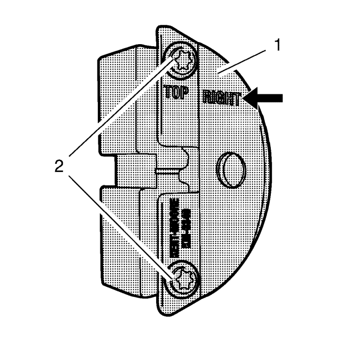
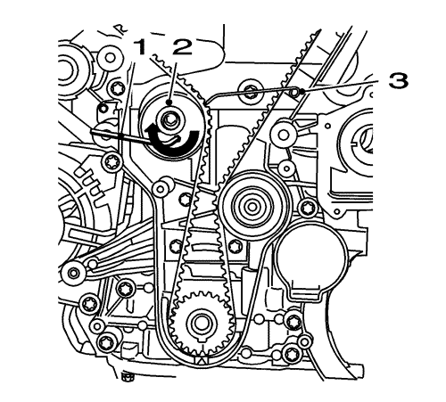

Sustitución de la culata
Herramientas especiales
| • | EN-6333 Pasador de bloqueo del tensor de la correa de distribución |
| • | EN-6340 Herramienta de bloqueo del árbol de levas |
| • | EN-6625 Herramienta de ajuste del cigüeñal |
| • | EN-45059 Kit de goniómetro de par de apriete |
Si desea informarse sobre herramientas regionales equivalentes, consultar Herramientas especiales .
Procedimiento de desmontaje
- Desmonte el colector de admisión. Consultar Sustitución del colector de admisión .
- Retire el colector de escape. Consultar
Sustitución del colector de escape : 2.0L Diésel LNP → 1.6L LDE, LXV, 1.8L 2H0 y LUW .
- Retire la tapa delantera superior de la correa de distribución. Consultar
Desmontaje de la cubierta delantera de la parte superior de la correa de distribución : LDE, LED, LFJ, LXV, 2H0, LUW .
- Elevar el vehículo y soportarlo de manera segura. Consultar Elevación y soporte en alto del vehículo .
- Retirar el protector de salpicaduras del habitáculo frontal. Consultar Sustitución del protector de salpicaduras del habitáculo frontal .
- Retire el dispositivo tensor de la correa de accionamiento. Consultar Sustitución del dispositivo tensor de la correa de accionamiento .
- Bajar el vehículo.

- Ajuste el compensador del cigüeñal en el sentido de giro del motor al "PMS de la carrera de combustión del cilindro 1" (1)

- Prepare la mitad derecha de la herramienta de bloqueo EN-6340.
| 9.1. | Retire los 2 tornillos (2) |
| 9.2. | Desmonte el panel delantero (1) |

- Monte la herramienta de bloqueo EN-6340 en las herramientas de ajuste del árbol de levas.
| | Nota: La marca de punto (4) en la herramienta de ajuste del árbol de levas de admisión no coincide con la ranura de la herramienta de bloqueo EN-6340-izquierda durante este proceso, sino que debe estar algo más arriba como se indica. |
| • | Monte la herramienta de bloqueo EN-6340-izquierda (1) en los reguladores del árbol de levas, tal y como se indica. |
| | Nota: La marca de punto (3) de la herramienta de ajuste del árbol de levas de escape debe coincidir con la ranura de la herramienta de bloqueo EN-6340-derecha. |
| • | Monte la herramienta de bloqueo EN-6340-derecha (2) en los reguladores del árbol de levas tal y como se indica. |
- Extraiga la herramienta de bloqueo EN-6340.
- Elevar el vehículo

- Retire el tornillo (1).

- Monte la herramienta de ajuste EN-6625 (2) para bloquear el cigüeñal.
- Coloque el tornillo (1).
- Desmonte el equilibrador del cigüeñal. Consultar Desmontaje del dispositivo equilibrador del cigüeñal .

Nota: El manual de montaje de SPX se suministra con la herramienta especial y también está disponible en línea directamente en SPX. Vaya a www.spxtools-shop.com.
- Coloque la herramienta de soporte CH-49290 (1) siguiendo las instrucciones del manual de instalación SPX.
- Apoye el bastidor base CH-904 en un gato.
- Apoye la herramienta de soporte CH-49290 en el bastidor base CH-904.

Nota: El manual de montaje de SPX se suministra con la herramienta especial y también está disponible en línea directamente en SPX. Vaya a www.spxtools-shop.com.
- Monte la herramienta de soporte CH-49290 (1) siguiendo las instrucciones del manual de instalación SPX.
- Desmonte el soporte de montaje del motor. Consultar Sustitución del soporte de montaje del motor .
- Retire la tapa delantera central de la correa de distribución. Consultar Desmontaje de la cubierta delantera central de la correa de distribución .
- Desmonte la tapa inferior delantera de la correa de distribución. Consultar Desmontaje de la cubierta delantera de la parte inferior de la correa de distribución .

- Afloje el tornillo del dispositivo tensor de la correa dentada.
- Tense el tensor de la correa de accionamiento (2) en la dirección de la flecha con una llave Allen (1).
- Monte el pasador de bloqueo EN-6333 (3).

- Retire el tornillo del tensor de la correa de distribución (1) y el propio tensor (2).
- Desmontar la tapa del árbol de levas. Consultar
Sustitución de la tapa de los árboles de levas : 1.6L LDE, LXV, 1.8L 2H0 y LUW .
- Retire los 2 sensores de posición del árbol de levas. Consultar
Sustitución del sensor de posición del árbol de levas : 1.6L LDE, LXV y 1.8L 2H0 .
- Desmonte la válvula solenoide de los actuadores de posición de los 2 árboles de levas. Consultar Sustitución de válvula magnética de actuador de posición del árbol de levas .
- Desmonte el regulador del actuador de posición de los 2 árboles de levas. Consultar Desmontaje del regulador del actuador de posición del árbol de levas .
- Extraiga la cubierta trasera de la correa de distribución. Consultar Desmontaje de la tapa trasera de la correa de distribución .
- Retire la carcasa del termostato de refrigerante del motor. Consultar
Sustitución del termostato de refrigerante del motor : 2.0L Diésel LNP → 1.6L LDE, LXV, LLU, 1.8L 2H0 y LUW .
- Retire los 10 tornillos de la culata en el orden indicado con el kit de goniómetro EN-45059.
| 34.1. | Afloje los 10 tornillos 90°. |
| 34.2. | Afloje los 10 tornillos 180°. |
- Desmonte la culata y colóquela en base adecuada.
- Desmonte y deseche la junta de culata.
Procedimiento de montaje
- Limpie las superficies de sellado.
- Compruebe que la superficie sea plana.
| 2.1. | Bloque motor, culata |
- Monte una junta de culata nueva.

- Monte la culata.
Precaución:Consulte Precaución con las fijaciones en la sección Prólogo.
Nota: Observe el orden de apriete correcto.
- Coloque los 10 tornillos de culata NUEVOS (1).
- Apriete los pernos de 5 veces. Utilice el kit de goniómetro EN-45059.
| 6.1. | Primer pasada a 25 N·m (18 lib. pie) |
- Monte la carcasa del termostato de refrigerante del motor. Consultar
Sustitución del termostato de refrigerante del motor : 2.0L Diésel LNP → 1.6L LDE, LXV, LLU, 1.8L 2H0 y LUW .
- Monte la tapa trasera de la correa de distribución. Consultar Montaje de la tapa trasera de la correa de distribución .
- Monte el regulador del actuador de posición del árbol de levas. Consultar Montaje del regulador del actuador de posición del árbol de levas .
- Monte la válvula solenoide de los actuadores de posición del árbol de levas. Consultar Sustitución de válvula magnética de actuador de posición del árbol de levas .
- Monte los 2 sensores de posición del árbol de levas. Consultar
Sustitución del sensor de posición del árbol de levas : 1.6L LDE, LXV y 1.8L 2H0 .
- Monte la tapa del árbol de levas. Consultar
Sustitución de la tapa de los árboles de levas : 1.6L LDE, LXV, 1.8L 2H0 y LUW .
- Limpie la rosca del dispositivo tensor de la correa de distribución.

- Monte el tensor de la correa de distribución (2).
- Monte el tornillo del dispositivo tensor de la correa dentada (3).
- Tense el tensor de la correa de accionamiento (2) en la dirección de la flecha con una llave Allen (1).
- Retire el pasador de bloqueo EN-6333 (3).
Nota: El tensor de la correa de distribución se mueve automáticamente hasta la posición correcta.
- Libere la tensión del dispositivo tensor de la correa dentada.
Precaución:Consulte Precaución con las fijaciones en la sección Prólogo.
- Apriete el tornillo del tensor de la correa dentada a 20 N·m (15 lib. pie).
- Monte la tapa delantera inferior de la correa de distribución. Consultar Montaje de la tapa inferior delantera de la correa de distribución .
- Monte la tapa delantera central de la correa de distribución Consultar Montaje de la tapa central delantera de la correa de distribución .
- Monte el soporte de montaje del motor. Consultar Sustitución del soporte de montaje del motor .
- Elevar el vehículo
- Baje la herramienta de soporte CH-49290 (1) con el bastidor base CH-904 y un gato.
- Retire la herramienta de soporte CH-49290 del bastidor base CH-904.
Nota: El manual de montaje de SPX se suministra con la herramienta especial y también está disponible en línea directamente en SPX. Vaya a www.spxtools-shop.com.
- Desmonte la herramienta de soporte CH-49290 (1) siguiendo las instrucciones del manual de instalación SPX.
- Montar el compensador del cigüeñal. Consultar Montaje del balancín del cigüeñal .
- Desmonte el tornillo (1).
- Retire la herramienta de ajuste EN-6625 (2) para bloquear el cigüeñal.
- Monte el tornillo (1) y apriételo hasta 75 N·m (55 lib. pie).
- Bajar el vehículo.
- Compruebe la distribución
| | Nota: Observe la marca de los piñones del árbol de levas. |
| • | Gire el cigüeñal 720° en el sentido de giro del motor con el tornillo del compensador del cigüeñal. |
| | Nota: La marca de punto (4) en la herramienta de ajuste del árbol de levas de admisión no coincide con la ranura de la herramienta de bloqueo EN-6340-izquierda durante este proceso, sino que debe estar algo más arriba como se indica. |
| • | Monte la herramienta de bloqueo EN-6340-izquierda (1) en las herramientas de ajuste del árbol de levas tal y como se indica. |
| | Nota: La marca de punto (3) de la herramienta de ajuste del árbol de levas de escape debe coincidir con la ranura de la herramienta de bloqueo EN-6340-derecha. |
| • | Monte la herramienta de bloqueo EN-6340-derecha (2) en las herramientas de ajuste del árbol de levas tal y como se indica. |
Nota: Observe la marca del compensador del cigüeñal y la cubierta.
- Compruebe la posición del compensador del cigüeñal.
Las marcas del compensador de torsión del cigüeñal (1) y la cubierta inferior (1) deben quedar alineadas.
- Monte el tensor de la correa de accionamiento. Consultar Sustitución del dispositivo tensor de la correa de accionamiento .
- Monte el protector contra salpicaduras del compartimento delantero. Consultar Sustitución del protector de salpicaduras del habitáculo frontal .
- Bajar el vehículo.
- Desmonte la herramienta de bloqueo EN-6340.
- Monte la tapa delantera superior de la correa de distribución. Consultar
Montaje de la cubierta delantera de la parte superior de la correa de distribución : LDE, LED, LFJ, LXV, 2H0, LUW .
- Monte el colector de escape. Consultar
Sustitución del colector de escape : 2.0L Diésel LNP → 1.6L LDE, LXV, 1.8L 2H0 y LUW .
- Monte el colector de admisión. Consultar Sustitución del colector de admisión .
- Llene el sistema de refrigeración. Consultar Drenaje y llenado del sistema de refrigeración .
- Compruebe y corrija el nivel de aceite del motor.
| © Copyright Chevrolet. All rights reserved |